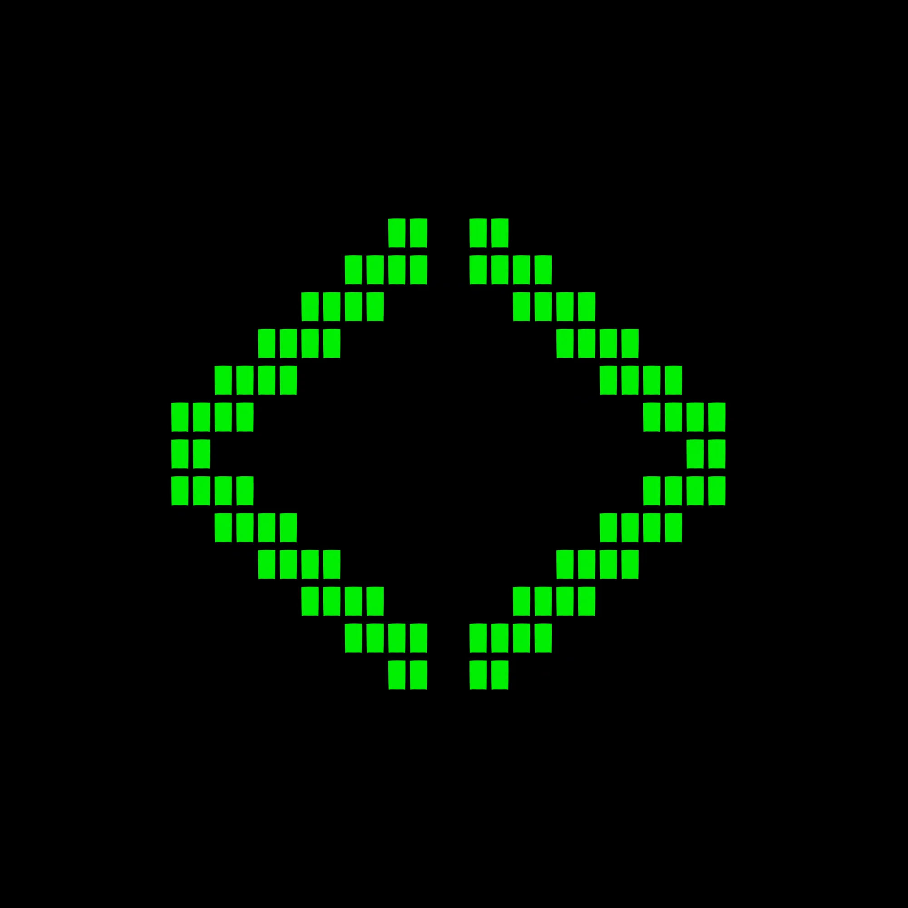

Scroll to growBuilding impactful solutions shouldn't require a massive budget.
No physical kits, budgets, or storage space required. All you need is your personal laptop and a drive to learn.
We need diverse skills beyond just coding: UI/UX designers, marketing strategists, researchers, and project managers.
Win regional STEAM competitions (like SaugaHacks or WolfHacks) while fulfilling IB CAS requirements and building professional portfolios.
We operate like a professional tech incubator. No hypotheticals—just functional software.
Weeks 1-3
Pitch hyper-local "Tech for Good" ideas. "Speed date" to form cross-functional teams of 3-4 based on complementary skills (C++, UI, Research). Validate your problem brief.
Weeks 4-7
Prove the concept visually. Start with paper prototypes (no laptops allowed), move to digital mockups in Figma, and align your team's GitHub and VS Code environments.
Weeks 8-11
Develop the Minimum Viable Product (MVP). Focus solely on core features. Swap apps with peers during Bug Crush week to competitive break each other's code.
Weeks 12-14
Learn LaTeX documentation and professional presentation skills. Culminates in Demo Day—pitching to teachers, industry pros, and council members before heading to regional Hackathons.